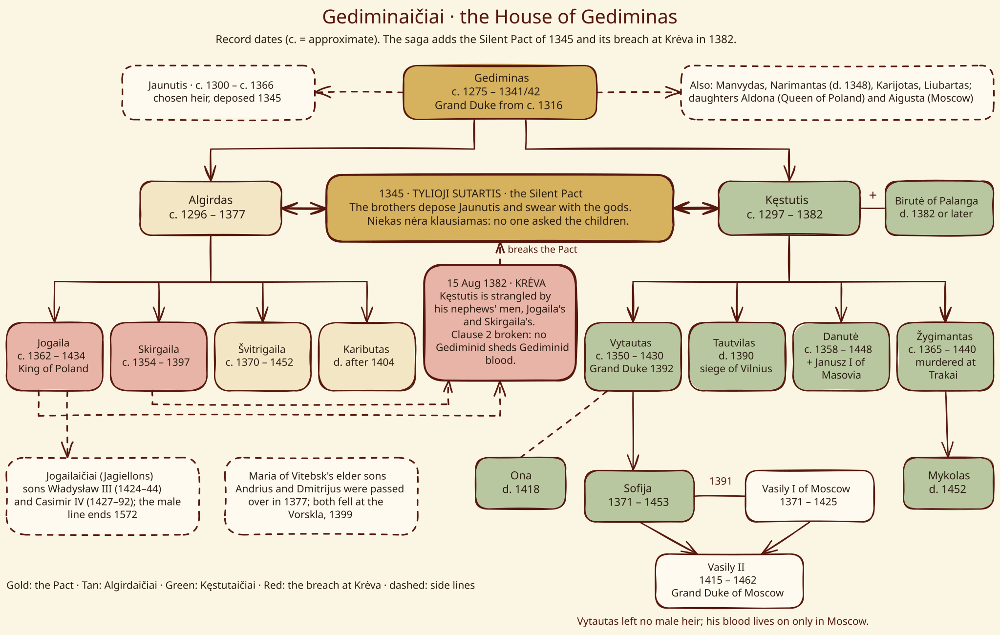

Gediminaičiai (House of Gediminas)¶
Family tree¶


Gediminid family tree¶
Record dates. The 1345 Pact and its 1382 breach are the saga’s overlay.
Gediminaičiai (House of Gediminas)

Gediminaičiai (House of Gediminas) · house — Image: Vladimir Lobachev, CC BY-SA 4.0 via Wikimedia Commons¶

Type |
house |
Status |
Historical record |
Note |
Dynasty of Grand Duke Gediminas (c.1275–1341/42). The name is a 19th-century label; the Vytis and the Columns are its arms. |
House card¶
Seat |
Vilnius (Upper Castle, Lower Castle, the wooden Crooked Castle, burnt 1390); older seats Kernavė and Trakai. [Historical record] |
Arms / sigil |
The Vytis, an armed rider, on princely seals from the later 14th century; which duke used it first is debated. The Columns (Gediminaičių stulpai) are a 19th-century name for a sign first attested on Vytautas’s coins and seals in the late 14th century (c. 1397 is often cited), plausibly a family tamga of the Kęstutaičiai. [Historical record] Saga sigil: the Iron Wolf howling on the hill. [The saga’s invention] |
Words |
Kol staugia vilkas, stovi miestas. “While the wolf howls, the city stands.” [The saga’s invention] |
Patron / burden |
The Silent Pact, sworn by the house, not by one branch; every kin-killing costs something. The omen-spirit Geležinis Vilkas. [The saga’s invention] |
Lineage¶
Gediminas (c. 1275 – winter 1341/42) became Grand Duke c. 1316 and wrote to the Pope and the Hanse in 1323, the first time Vilnius is named as capital. His sons: Manvydas and Narimantas (d. 1348), Algirdas, Kęstutis, Karijotas, Liubartas and Jaunutis; his daughters married Casimir III of Poland (Aldona-Ona, 1325) and Simeon of Moscow (Aigusta, 1333). [Historical record; his wife or wives are disputed]
Branches: Algirdaičiai, Kęstutaičiai, Jogailaičiai and Čartoriskiai. Lesser lines: the Karijotaičiai (Podolia), Liubartaičiai (Volhynia), Jaunutaičiai (Zasławski) and Olelkaičiai (Kyiv). The house’s genius was the appanage: every son got a city, and every city got a son who might rebel.
Feuds & alliances¶
1345: Algirdas and Kęstutis depose their brother Jaunutis, the first Gediminid wronged by Gediminids. [Historical record]
Algirdaičiai against Kęstutaičiai: 1380–1392 (Jogaila and Skirgaila against Kęstutis and Vytautas) and again 1432–1440 (Švitrigaila against Žygimantas).
Maria’s sons against Uliana’s sons: the elder, Orthodox Algirdaičiai were passed over in 1377.
The Order and Poland court one branch against another; Masovia and Moscow marry into both.
Fate across the books¶
VI: the Pact is sworn (1345); Algirdas’s pyre (1377) weakens it.
I: Krėva, 15 Aug 1382: clause 2 broken by Jogaila and Skirgaila. II: Karigaila and Tautvilas die on opposite sides of the Vilnius walls (1390); the Vorskla (1399) takes Andrius and Dmitrijus.
III–IV: a reconciled house wins Grunwald; Vytautas dies without a male heir (1430); his blood survives in Moscow through Sofija.
V: Žygimantas is murdered at Trakai (1440). The Iron Wolf’s last howl follows. [Historical record] The Jagiellonian male line ended with Sigismund II Augustus in 1572.
Relations
Bound by: Tylioji Sutartis (Silent Pact) (1345–1387)
Members: Algirdaičiai (Algirdas’s line) — Branch: Algirdas and his sons. · Gediminas · Kęstutaičiai (Kęstutis’s line) — Branch: Kęstutis and his sons.
Rules: Grand Duchy of Lithuania
Servants: Geležinis Vilkas (the Iron Wolf omen) — The collared spirit of the house; howls at the turning points of Gediminid fate.
Connections¶
graph LR
algirdaiciai["Algirdaičiai (Algirdas's line)"]
gdl["Grand Duchy of Lithuania"]
gediminaiciai["Gediminaičiai (House of Gediminas)"]
gediminas["Gediminas"]
gelezinis_vilkas["Geležinis Vilkas (the Iron Wolf omen)"]
kestutaiciai["Kęstutaičiai (Kęstutis's line)"]
silent_pact["Tylioji Sutartis (Silent Pact)"]
gediminaiciai -->|Rules| gdl
gediminas -->|Member of| gediminaiciai
algirdaiciai -->|Member of| gediminaiciai
kestutaiciai -->|Member of| gediminaiciai
silent_pact -->|Binds| gediminaiciai
gelezinis_vilkas -->|Servant of| gediminaiciai
style gediminaiciai stroke-width:3px